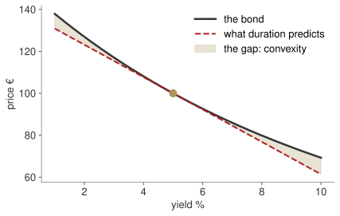
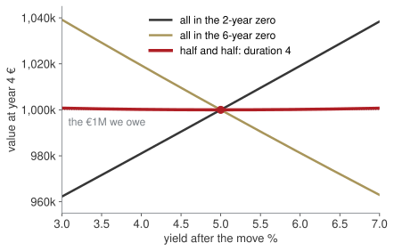

Week 5 · Thursday 22 October 2026 · 10:00–13:00
MBA03 Research & Quantitative Business Methods · European School of Economics, Florence
PAPER · 15 minutes
One of you takes us through it. The memo to the Board member. Would they accept it? Why not?
Not an exam: the point is to see how you got there.
Block AWhat does compounding actually do?More often always helps, by less each time; the ceiling is e^{r}
Block BWhich of two quotes is cheaper?Compare on EAR = (1 + r/n)^{n} - 1, never on the nominal rate
Block CWhat is a future euro worth today?Discount before adding: PV = FV/(1+r)^{t}
Block DBuild the line or not?NPV = +€319k at 9% — accept; IRR is where NPV crosses zero
Today the same arithmetic prices a bond, and a derivative tells you what a rate rise costs.
| Wk | Date | What you can do by hand |
|---|---|---|
| 1–2 | 24 Sep – 1 Oct | algebra, limits, the derivative ✓ |
| 3 | 8 Oct | study, optimise, integrate ✓ |
| 4 | 15 Oct | interest, discounting, NPV ✓ |
| 5 | 22 Oct | bonds, duration, convexity |
Today closes the loop.
A bond is an annuity plus a lump sum — last week’s arithmetic, nothing new. Duration is a derivative — week 2’s. Convexity is a second derivative — week 3’s.
Then: a mock of the final’s calculus question, in exam conditions.
The midterm is due Sunday 1 November on Turnitin. Reading week has one optional office hour: bring a draft.
Arno Bikes, a reserve
The firm keeps €1M in bonds as a cash reserve. The Board has read that rates may rise by a point and asks: should we be worried?
By the end of the session you will answer that with two numbers and a sentence.
Block AWhat is this bond worth?pricing
Block BHow much does a rate rise cost?duration
Block CWhat the straight line missesconvexity, then immunisation
Block DThe final’s calculus question, for realmock exam
P = \sum_{t=1}^{n} \frac{c \cdot F}{(1+y)^{t}} \;+\; \frac{F}{(1+y)^{n}}
An annuity of coupons, plus the face value at the end. You priced both last week.
A 5-year bond, 4% coupon, face €100, yield 6%:
P = 4 \times 4.212364 + 74.73 = 16.85 + 74.73 = €91.58
Bet before we compute
Why is it below 100? Answer in one sentence, without arithmetic.
| coupon > yield | premium — price above face |
| coupon = yield | par — price equals face |
| coupon < yield | discount — price below face |
The bond pays 4% on its face; the market wants 6%. The only way to deliver 6% is to sell it for less than 100.
Price and yield move in opposite directions. Always, for every bond, with no exceptions.
PAPER · drills.md
12 minutes. Show the annuity part and the redemption part separately. D3 is in the resit’s exact format.
Block AWhat is this bond worth?pricing
Block BHow much does a rate rise cost?duration
Block CWhat the straight line missesconvexity, then immunisation
Block DThe final’s calculus question, for realmock exam

Price against yield is a curve, not a line. Duration is the straight line that touches it where you are standing now.
dP/dy = −772, and written as a percentage, D_mod = 7.72.
Macaulay — the average time to being repaid, weighted by present value: D = \sum_{t} t \cdot \frac{PV(CF_t)}{P} Measured in years.
Modified — the same thing turned into a sensitivity: D_{\text{mod}} = \frac{D}{1+y} = -\frac{1}{P}\frac{dP}{dy} Measured in % per 1% of yield.
\frac{\Delta P}{P} \;\approx\; -D_{\text{mod}} \times \Delta y
A 10-year 5% bond at par has D_mod = 7.72: a one-point rise in yields costs about 7.7% of its value.
| other things equal | duration |
|---|---|
| longer maturity | rises — money comes back later |
| higher coupon | falls — more comes back sooner |
| higher yield | falls — distant coupons discounted harder |
A zero-coupon bond’s Macaulay duration is exactly its maturity: there is nothing to pull the average forward.
Board sentence
Duration is how many percent you lose for each percent rates rise. It is one number, and it is the first one a Board asks for.
PAPER · drills.md
15 minutes. The weights column must sum to 1. If it does not, stop before computing the duration.
Block AWhat is this bond worth?pricing
Block BHow much does a rate rise cost?duration
Block CWhat the straight line missesconvexity, then immunisation
Block DThe final’s calculus question, for realmock exam
Bet before we compute
The straight-line estimate is wrong. Is it wrong in the holder’s favour, or against?
The curve lies above the tangent on both sides. So duration alone overstates the loss when yields rise, and understates the gain when they fall.
Small move, small gap. Large move, large gap — and always the same way.
\frac{\Delta P}{P} \;\approx\; -D_{\text{mod}}\,\Delta y \;+\; \tfrac{1}{2}\,C\,(\Delta y)^{2}
| estimate | price at 6% |
|---|---|
| duration only | €92.28 |
| duration + convexity | €92.66 |
| the truth | €92.64 |
Two cents out instead of thirty-six. The half and the square are both easy to drop, and both change the answer.
More upside, less downside, for the same first-order risk. You usually pay for it.
PAPER · drills.md
15 minutes. D11 answers the Board’s question: a portfolio duration, a euro figure, and a sentence.
€400k at D_mod = 7.72, €600k at D_mod = 1.90:
D_{\text{portfolio}} = 0.4(7.72) + 0.6(1.90) = 4.23 \Delta V \approx -4.23 \times 1\% \times €1{,}000{,}000 = -€42{,}280
“A one-point rise costs the reserve about €42,000, a little over 4%. About three quarters of the exposure sits in the ten-year holding; shortening it would roughly halve the figure. Convexity means the true loss is slightly smaller than this.”
Arno Bikes, a payment
The new building costs €1M, due in exactly 4 years. The firm sets the money aside today, in zero-coupon bonds yielding 5%. Then rates move.
Bet before we compute
Short bonds, long bonds, or a mix? Which choice leaves the €1M there in year 4, whichever way rates go?
Beyond the syllabus: the step after duration, from measuring the risk to removing it.
Prices fall — bad
Whatever we still hold at year 4 is worth less. The longer the bond, the bigger the fall: that is duration.
Coupons reinvest at more — good
Whatever comes back before year 4 earns the higher rate until the payment. The sooner it comes back, the more it gains.
Short bonds: reinvestment wins. Long bonds: the price fall wins.
If the duration of what we hold equals the date of what we owe, the two effects offset — to first order.
PV = \frac{€1{,}000{,}000}{(1.05)^{4}} = €822{,}702
A zero’s duration is its maturity. Put a share w in a 2-year zero, the rest in a 6-year zero:
2w + 6(1-w) = 4 \quad\Longrightarrow\quad w = \tfrac{1}{2}
| invested today | pays | |
|---|---|---|
| 2-year zero | €411,351 | €453,515 in year 2 — reinvested to year 4 |
| 6-year zero | €411,351 | €551,250 in year 6 — sold at year 4 |
| yield after | value at year 4 | vs €1M |
|---|---|---|
| 3% | €1,000,740 | +740 |
| 4% | €1,000,183 | +183 |
| 5% | €1,000,000 | 0 |
| 6% | €1,000,180 | +180 |
| 7% | €1,000,712 | +712 |
At 6%: 453{,}515 \times 1.06^{2} + \dfrac{551{,}250}{1.06^{2}}.

Slightly above €1M either way: that is convexity again, working for us.
Board sentence
Hold bonds whose duration equals the date of the payment, and a move in rates, up or down, cannot hurt it: what we lose on prices we make back on reinvestment.
One condition. As time passes the date gets closer and durations drift apart, so the match is reset every year — immunisation is a routine, not a purchase.
PAPER · drills.md
5 minutes. Duration equation first, then the euros. D13 checks it after a move; it is for home if time runs short.
Block AWhat is this bond worth?pricing
Block BHow much does a rate rise cost?duration
Block CWhat the straight line missesconvexity, then immunisation
Block DThe final’s calculus question, for realmock exam
PAPER · mock_exam.md · no notes, calculator only
Five items, twenty per cent each, in the form of the real thing — six minutes an item:
Then we mark it together, and you keep it.
| Homework 5 | due Wednesday 28 October, 23:59 — lighter, on purpose |
| Reading week | 26–30 October, no class; one optional online office hour |
| Midterm | due Sunday 1 November, 23:59, Turnitin |
| Presentations | week of 2 November |
| Weeks 6–10 | Vincenzo Nardelli, online: probability, distributions, statistics |
I mark the midterm and stay your reference for it. Everything from weeks 1–3 is what it is built on; everything from weeks 4–5 is the resit’s financial-mathematics block and the exam items around it.
Bring a draft to the office hour. A blank page is a harder conversation than a wrong one.
Research & Quantitative Business Methods · ESE Florence